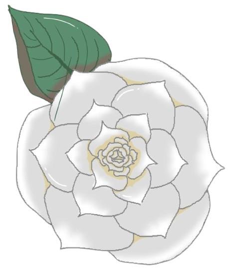

Textos escritos de forma verossímil, sites falsos que parecem reais, mensagens enigmáticas enviadas no momento certo, tudo contribui para a ilusão.

Também conhecida como Atropa belladonna, é uma planta enigmática e historicamente temida. Suas flores roxas e frutos negros escondem um alto teor de toxinas, o que a torna venenosa e perigosa. Ao mesmo tempo, foi usada em antigas práticas medicinais e rituais, cercada de mistério e fascínio.

A camélia simboliza delicadeza e perfeição. Suas flores elegantes, geralmente brancas, rosas ou vermelhas, florescem em arbustos robustos que encantam jardins pelo mundo. É também símbolo de amor e devoção, muito presente em tradições orientais, especialmente no Japão e na China.
Com pétalas brancas e centro amarelo radiante, a margarida transmite pureza e simplicidade. É frequentemente associada à inocência, juventude e renovação. Sua aparência alegre a tornou um dos símbolos universais da beleza natural e da esperança.
Flor vibrante e cheia de formas geométricas, a dália é conhecida por sua variedade de cores intensas. Representa força interior, elegância e criatividade. É considerada uma flor da superação, já que cresce forte e imponente, mesmo em condições adversas.

Pequenas flores brancas em forma de sino que exalam um perfume delicado e inesquecível. O lírio-do-vale simboliza pureza, felicidade e renascimento. Apesar de sua aparência frágil, é resistente, brotando sempre na primavera como sinal de esperança e novos começos.
Com tons vivos de laranja e amarelo, as marigolds carregam a energia do sol. São flores de proteção e vitalidade, muito usadas em celebrações culturais, como o Día de los Muertos no México. Representam calor, criatividade e a ligação entre a vida e a memória.
Pequena, discreta e encantadora, a violeta simboliza modéstia, fidelidade e espiritualidade. Suas flores roxas ou azuladas guardam um ar de mistério, sendo também associadas ao afeto e à calma. É uma das flores mais delicadas, mas que transmite uma presença marcante.